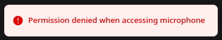

Table of Contents
- Allow Microphone in Open-WebUI
- Why is Microphone Access Disabled by Default?
- Fixes for Common Browsers
- Example: Microsoft Edge
You may have seen this error message when trying to use voice recognition features in Open-WebUI:

In this guide, we'll teach you how to allow microphone access for Open-WebUI. This will enable you to use voice recognition features within the application, such as Speech-To-Text (STT).
Why is Microphone Access Disabled by Default?
The reason why microphone access is disabled by default is due to built-in security measures in browsers that block websites from accessing your microphone without explicit permission. Only enable microphone access if you access the application within your own local network or over a VPN, as it may pose a privacy risk when accessed over public networks.
Configuration will vary depending on your browser and operating system. You must configure your browser to treat the website as secure (https) in order for the microphone to work.
Fixes for Common Browsers
The table below provides general instructions for some popular browsers:
| Browser | Instructions |
|---|---|
| Chrome/Chromium | StackOverflow |
| Firefox | Unsupported |
| Opera | StackOverflow (use "opera://flags" instead of "chrome://flags") |
| Safari | Unsupported |
| Vivaldi | Vivaldi Forum |
| Edge | Microsoft Forum (first answer, option 2) |
| Brave | Brave Forum (post 6) |
Please note that these instructions are general and may not be accurate for your specific setup or version of the browser. If you're having trouble, it might be helpful to search online for more specific instructions based on your exact situation.
Example: Microsoft Edge
Here is an example of how to allow microphone access in Microsoft Edge, with a placeholder for the IP address:
- In Edge, type "edge://flags/" into the URL bar and press Enter.
- Search for "Insecure origins treated as secure".
- Enter the Tiny Llama IP address (e.g.,
http://192.168.0.52:8080) in the text box next to this option, then click Enable. Note: You must include "http" at the beginning of the URL and specify port ":8080".

- Restart Edge for changes to take effect.